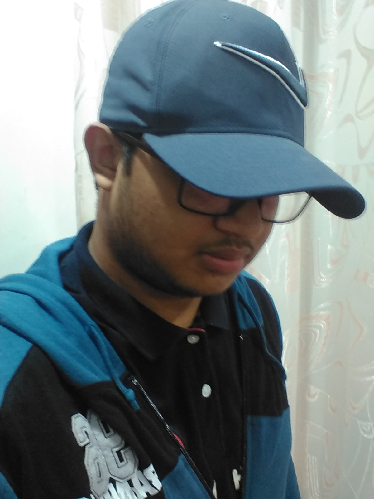

About Me
My name is Hiruth S Kariyawasam, and I come from Sri Lanka. I am the 1st born in my family of 5, so I have 2 younger sisters who look up to me. I am currently studying in Canada hoping to open up a pathway to chase my dreams and this is still the beginning of my journey.
Whether it is a lie concocted to deceive a person for nefarious reasons or white lie excuse for why you are late for class or multi-billion-dollar movie or just a person standing in the middle of the road, everything has an intrigue beckoning our curiosity to come to look and devour and that very essence is what I call a story. Since I was a kid, I was always ready to hear a good story and now I chase after stories always looking for the next best thing, whether it is reading, watching, or hearing, I always find something to satiate this hunger of my curiosity. As currently as I am of now, an anime adorer, a manga enjoyer and a game fanatic, I aspire to become either a storyboard artist or a concept artist in the future and I do hope to share stories with one and all.
A few of my hobbies are :-
- Watching Anime
- Playing Games
- Drawing Characters
"With Great Power Comes Great Responsibility" - Ben Parker